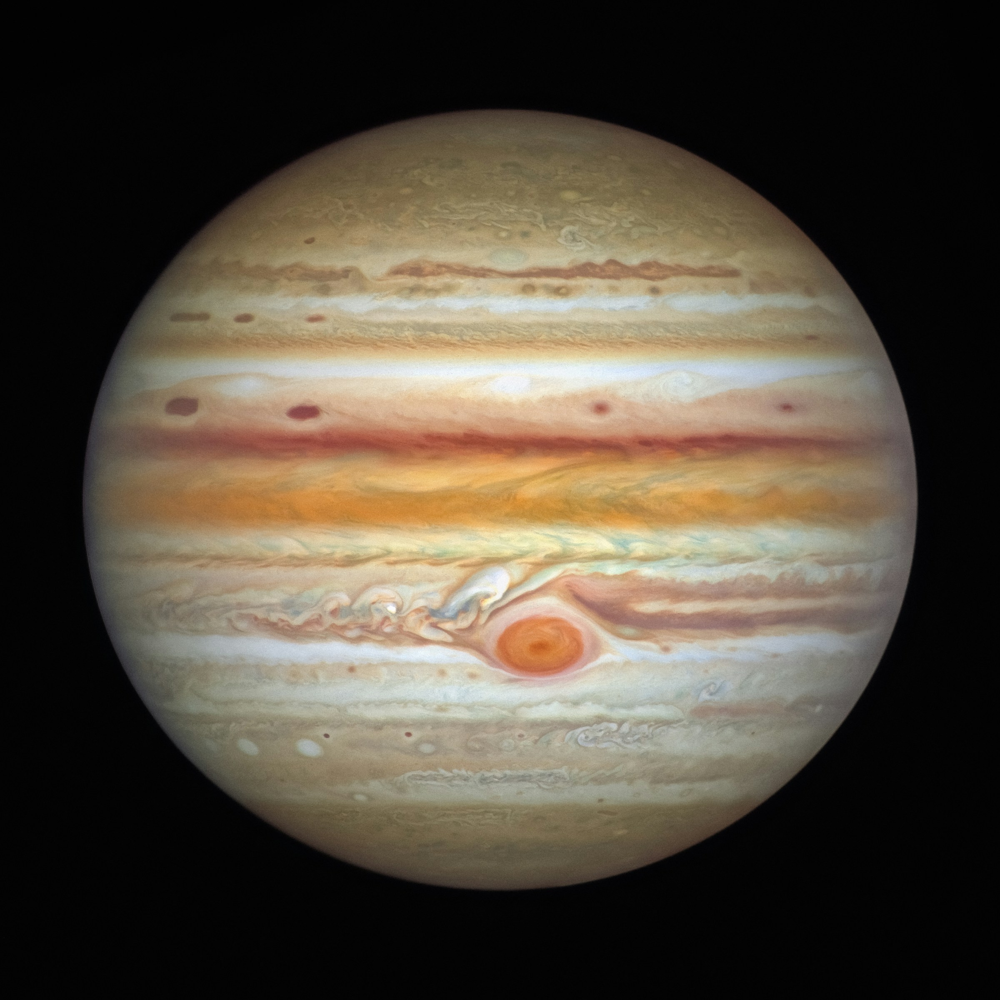

Neptune

Neptune is the eighth, and most distant planet from the Sun. It’s the fourth-largest, and the first planet discovered with math. The ice giant Neptune is more than 30 times as far from the Sun as Earth. Neptune is the only planet in our solar system not visible to the naked eye. Its atmosphere (made up mostly of hydrogen, helium, and methane) extends to great depths, gradually merging into water and other melted ices over a heavier, solid core with about the same mass as Earth. Neptune has 16 known moons.
Saturn

Saturn is the sixth planet from the Sun and the second largest planet in our solar system. Saturn is a massive ball made mostly of hydrogen and helium. Saturn is not the only planet to have rings, but none are as spectacular or as complex as Saturn's. Saturn also has dozens of moons. From the jets of water that spray from Saturn's moon Enceladus to the methane lakes on smoggy Titan, the Saturn system is a rich source of scientific discovery and still holds many mysteries.
Uranus

Uranus is the seventh planet from the Sun, and the third largest planet in our solar system. Uranus is very cold and windy. It is surrounded by faint rings, and more than two dozen small moons. It rotates at a nearly 90-degree angle from the plane of its orbit. This unique tilt makes Uranus appear to spin on its side. Uranus was the first planet found with the aid of a telescope. Uranus' atmosphere is mostly hydrogen and helium, with a small amount of methane and traces of water and ammonia. The methane gives Uranus its signature blue color.
Jupiter
Jupiter is the largest and oldest planet in our solar system. If Jupiter was a hollow shell, 1,000 Earths could fit inside. Jupiter has the shortest day in the solar system, taking about 9.9 hours to spin around once on its axis. Jupiter's signature stripes and swirls are actually cold, windy clouds of ammonia and water, floating in an atmosphere of hydrogen and helium. The top cloud is probably made of ammonia ice, while the middle layer is likely made of ammonium hydrosulfide crystals. The innermost layer may be made of water ice and vapor. Jupiter’s iconic Great Red Spot is a giant storm bigger than Earth that has raged for hundreds of years. With four large moons and many smaller moons, Jupiter forms a kind of miniature solar system.